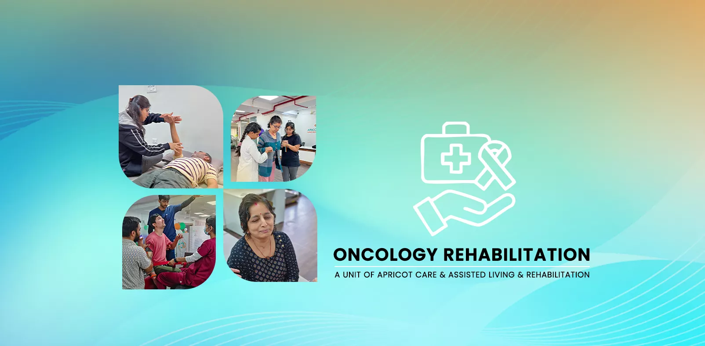

Oncology Rehabilitation & Cancer Care in Pune


Regaining Strength, Hope, and Your Life
Receiving a cancer diagnosis is a moment that changes everything. The focus immediately shifts to a fight for survival, a challenging journey of treatments—including surgery, chemotherapy, and radiation—all aimed at treating the disease. But in the midst of this fight, another crucial battle is often overlooked: the battle for your quality of life.
The treatments that save your life can also take a profound toll on your body and spirit, leaving you with debilitating fatigue, pain, weakness, and emotional distress. At Neuro Rehab in Pune , we believe that you deserve to live as fully and strongly as possible, every single day.
Welcome to your definitive guide to Oncology Rehabilitation. Our specialized program is not about treating the cancer itself; it is about treating you, the person. We are an essential part of your comprehensive cancer care team, dedicated to helping you manage the side effects of treatment, rebuild your strength, and empower you to live with dignity, hope, and purpose.
What is Oncology Rehabilitation and Why is it Essential?
Oncology Rehabilitation is a specialized field of therapy designed to address the physical, cognitive, and emotional impairments that result from cancer and its treatments. It is a proactive, evidence-based approach to care that helps you function at the highest level possible.
Think of it this way: your oncologist is focused on curing the disease. Our oncology rehab specialists are focused on helping you maintain the strength to endure the cure. We help you feel better, move better, and live better. Integrating rehabilitation into your cancer care plan is not a luxury; it is a necessity for improving your resilience, minimizing suffering, and ensuring the best possible outcome for your long-term well-being.
Schedule a Compassionate ConsultationSupport at Every Stage of Your Cancer Journey
It is a common myth that you should wait until after your treatment is over to "get back in shape." The truth is, rehabilitation can provide immense benefits at every single stage of your cancer journey.
The period between your diagnosis and the start of treatment is a critical window. By engaging in a targeted exercise and wellness program before surgery or chemotherapy, you can build up your physical and emotional reserves, allowing you to tolerate treatments more effectively and recover faster..
Throughout chemotherapy or radiation, our focus is on managing side effects in real-time. We help you combat fatigue, manage pain, and maintain as much strength and function as possible, helping you stay active and engaged in your life..
After your primary cancer treatment is complete, the work of recovery begins. We help you address any lingering side effects, rebuild your body, and safely return to the activities, work, and hobbies that bring you joy and define your life..

Addressing the Challenges of Cancer Treatment: Our Areas of Expertise
Our team in Pune is specially trained to help you navigate and overcome the most common and challenging side effects of cancer therapy.
Managing Cancer-Related Fatigue (CRF)
This is the most common side effect reported by patients. Affecting up to 90% of patients undergoing chemotherapy or radiation , it's a persistent sense of exhaustion that is not relieved by rest. The#1 recommended treatment for CRF is not more rest, but carefully prescribed, gentle exercise.
How we help:
- We design a personalized, low-intensity aerobic and light strengthening program that helps boost your energy levels, improve your sleep, and break the debilitating cycle of fatigue.
Controlling and Reducing Pain
Pain can result from surgery, the cancer itself, or nerve damage from treatment. We use a gentle, multi-faceted approach to provide relief.
How we help:
- Through gentle manual therapy, stretching, and non-invasive pain-relief modalities, we can reduce muscle tension and pain. Crucially, we teach you self-management strategies to give you more control.
Rebuilding Strength & Overcoming Weakness (Deconditioning)
Cancer treatment and prolonged bed rest can lead to significant muscle loss (atrophy), making you feel weak and unstable.
How we help:
- We create a safe, progressive strengthening program tailored to your energy levels. We focus on rebuilding the functional strength you need for daily tasks, like climbing stairs or carrying groceries.
Improving Balance & Chemotherapy-Induced Peripheral Neuropathy (CIPN)
Many chemotherapy drugs can damage peripheral nerves, causing numbness, tingling, and pain in the hands and feet. This significantly affects balance and increases the risk of falls.
How we help:
- We focus on balance and proprioceptive exercises to improve your stability and body awareness. We also teach you safety strategies to prevent falls and manage daily activities when sensation is impaired.
Managing Lymphedema
For patients who have had lymph nodes removed or damaged (common in breast cancer), lymphedema—a chronic swelling of a limb—is a major risk.
How we help:
- Our certified Physiotherapists can provide Complete Decongestive Therapy (CDT), the gold standard for lymphedema care. This includes manual lymphatic drainage, compression bandaging, specific exercises, and meticulous skin care education.
Your Stay at Neuro Rehab: A Medically Supervised Healing Environment
For patients requiring intensive support during their cancer journey, our inpatient facility in Pune provides a safe, comfortable, and centerally supervised environment. This allows you to focus completely on your strength and well-being, while our team manages your daily and medical needs.
24/7 Skilled Nursing Care
Our compassionate nursing team is on-site 24/7 to provide medication management, expert wound care, assistance with daily needs, and constant emotional support.
Continuous Medical Monitoring
Your health is overseen by our on-site medical team, ensuring hospital-level vigilance and immediate response to any needs, all in a comfortable, non-centeral setting.
Why Choose Apricot Rehab for Oncology Care in Pune?
Specialized Expertise:
Our Physiotherapists have advanced training in the unique needs of oncology patients. We understand your diagnosis, your treatments, and how to create a program that is both safe and effective for you.
A Gentle, Person-Centered Approach:
We listen. We understand that you will have good days and bad days. Your energy levels and well-being dictate the pace of every session. Our approach is always gentle, supportive, and respectful
Coordination with Your Oncology Team:
We view ourselves as part of your comprehensive medical team. We maintain communication with your oncologist and surgeon to ensure your rehabilitation plan is fully aligned with your medical care.
A Private, Nurturing & Hopeful Environment:
We have created a space that is calm, private, and filled with optimism. It's a sanctuary where you can focus on healing your body and spirit, away from the centeral feel of a hospital.
Frequently Asked Questions (FAQ)
Is it really safe for me to exercise during chemotherapy or radiation?
Yes, not only is it safe, but it is highly recommended by major cancer organizations worldwide. The key is that the exercise must be prescribed and monitored by a professional who understands oncology. They will design a program that is appropriate for your blood counts, energy levels, and specific situation.
I have absolutely no energy. How can I possibly do therapy?
This is the most common and understandable concern. The program is specifically designed to break the cycle of fatigue. We start very, very gently. The goal is to leave you feeling better and more energized, not depleted. Even 5-10 minutes of light, structured activity can start to build your energy reserves.
My doctor never mentioned rehabilitation. Why do I need it?
Oncology rehabilitation is a relatively new but rapidly growing and essential field of medicine. While many oncologists now actively refer patients, some may still be focused solely on the medical treatment of the disease. Rehabilitation is the key to managing the side effects of that treatment and preserving your quality of life.
What is Lymphedema, and can it be cured?
Lymphedema is a chronic swelling caused by a compromised lymphatic system. While there is no "cure" for lymphedema, it can be very effectively managed with specialized therapy (Complete Decongestive Therapy). Early detection and management are key to preventing it from progressing.

Your Road To Recovery
Book An Appointment To Kickstart Your Recovery Journey
Seamless On-site Rehabilitation
Visit our neuro and physiotherapy center in Pune to meet our professionals and start your treatment .
Personalized Online And Home Care Services
Begin with a personalized consultation for online therapies and home healthcare services. Our professionals will help you heal without leaving your house